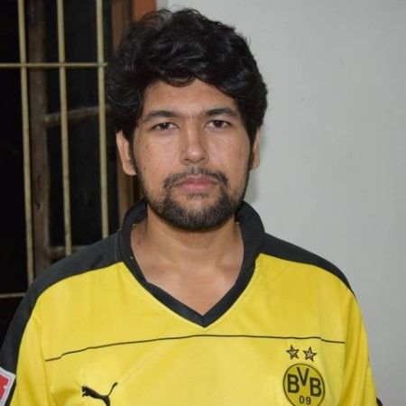

Welcome to my personal homepage
My name is Md. Mahadi Hassan (“Sibat”). I am a Graduate student in the department of Computer Science and Software Enginering at Auburn University, Alabama. I joined at the Auburn University as a Ph.D. student from fall 2021 and I am currently working with Dr. Shubhra Kanti Karmaker (“Santu”) as a graduate research assistant. My primary research interest lies at the intersection of Artificial Intelligence and Natural Language Processing. My current research focuses on the extraction of information from natural languages as well as defining language models for Spiking Neural Networks.